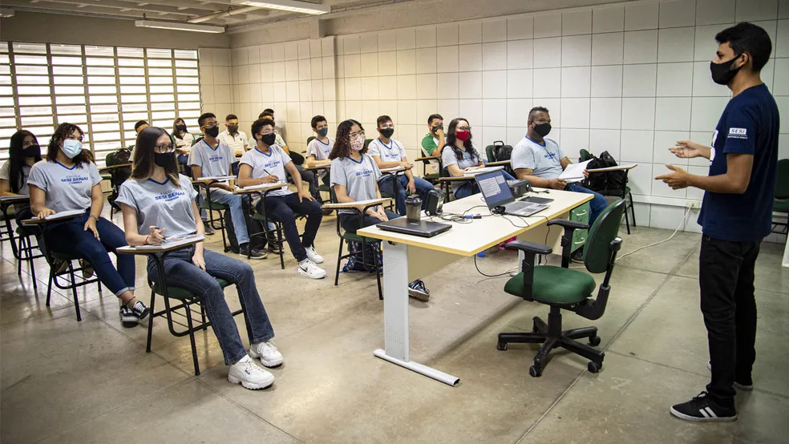

Novo Ensino Médio, Bom para quem?
Pesquisa mostra que a maioria dos estudantes brasileiros não gostam do NEM.
Foi perguntado para alguns estudante do NEM o que eles acham, e em média 80% dos estudantes no Brasil não gostam, enquanto apenas 20% gostam.
O NEM Aprovado em 2017 e com o seu começo em 2022 veio com boas propostas, mas não foi bem executado, entre suas propostas veio o aumento da carga horária, e a escolha dos itinerários formativos onde o aluno pode escolher entre as ofertadas pela escola, no total a escola pode ofertar entre 5 itinerários formativos, ciências humanas, ciências sociais, Ciências exatas, ciências da natureza e desenvolvimento de sistema integrado, mas muitas escolas ofertam apenas alguns ou um único, deixando o aluno sem muita opção de escolha. Muitos alunos não sabem a profissão que querem seguir fazendo uma escolha muitas vezes prematura.
Pegamos seu lado de professores, pedagogos, diretores e alunos do NEM. A professora Gabriela Svierdsovski que dá aula e biotecnologia para turmas de segundo ano do NEM no Colégio Estadual Professor Narciso Mendes, uma escola do bairro Xaxim na cidade de Curitiba no Paraná, diz O NEM é interessante do ponto de vista de trazer novos conteúdos, porém é bagunçado, e problemático devido a uma escolha ter que ser realizada muito cedo
, já o diretor da mesma escola Marcelo Oliveira diz